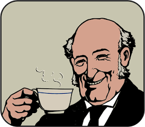
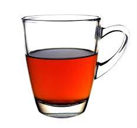

Drink Tea
Drink Tea
 What is Tea?
Tea is an aromatic beverage prepared by pouring hot or boiling water over cured or fresh leaves of Camellia sinensis, an evergreen shrub native to East Asia which probably originated in the borderlands of southwestern China and northern Myanmar. Tea is also rarely made from the leaves of Camellia taliensis. After plain water, tea is the most widely consumed drink in the world. There are many different types of tea; some have a cooling, slightly bitter, and astringent flavour, while others have vastly different profiles that include sweet, nutty, floral, or grassy notes. Tea has a stimulating effect in humans primarily due to its caffeine content.An early credible record of tea drinking dates to the third century AD, in a medical text written by Chinese physician Hua Tuo.[12] It was popularised as a recreational drink during the Chinese Tang dynasty, and tea drinking subsequently spread to other East Asian countries. Portuguese priests and merchants introduced it to Europe during the 16th century.[13] During the 17th century, drinking tea became fashionable among the English, who started to plant tea on a large scale in British India. The term herbal tea refers to drinks not made from Camellia sinensis. They are the infusions of fruit, leaves, or other plant parts, such as steeps of rosehip, chamomile, or rooibos. These may be called tisanes or herbal infusions to prevent confusion with tea made from the tea plant. More info...
Popular Types of Tea
-

- Black Tea
- Green Tea
- White Tea
- Herbal Tea